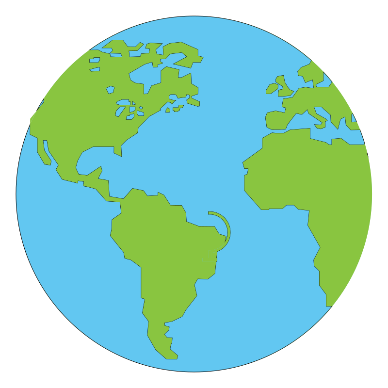
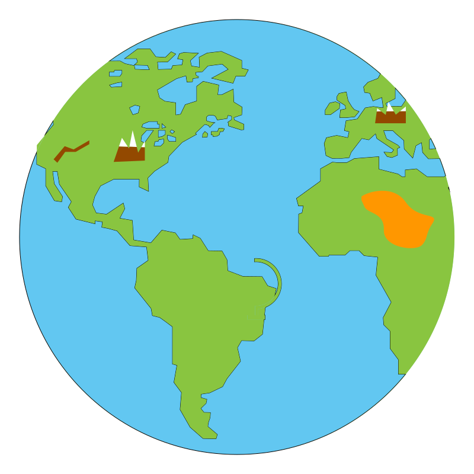

Hidden Convexity, Optimization, and Algorithms on Rotation Matrices
Kevin Shu
Coauthors
Akshay Ramachandran - CWI

Alex Wang - Perdue University
A Simple Problem
Imagine you're an astronaut who is floating in space, and you can see the earth below you.
A Simple Problem
You can also see some landmarks. You want to determine how you are oriented in space based on a globe.
Wahba's Problem
\[ \min_{U \in \text{SO}(3)} \sum_{i=1}^n \|U v_i - u_i\|^2, \] where \(v_i\) are the reference points, and \(u_i\) are the estimates of the actual locations of the points.
Wahba's Problem (Reformulated)
\[ \min_{U \in \text{SO}(3)} \langle V, U \rangle, \] where \(V = -\sum_{i} u_i v_i^{\intercal}.\) This can be solved using SVDs.
Constrained Wahba's Problem
Given \(A, B \in \R^{n \times n}\),
\[ \min_{U \in \text{SO}(n)} \langle A, U \rangle \] \[ \text{s.t. } \langle B, U \rangle \ge 3-\delta. \]
A constraint might appear if the astronaut already has some initial estimate of their orientation. The constraint reduces symmetry and means that a direct solution using SVDs is not possible.
Constrained Wahba's Problem (Reformulated)
Given \(A, B \in \R^{n \times n}\),
\[ \begin{align} \min &\qquad x\\ \text{s.t. }&\qquad y \ge 3 -\delta\\ &\qquad(x,y) \in \{\langle A, U\rangle, \langle B, U\rangle : U \in \text{SO}(n)\}. \end{align} \]
Theorem
For any \(A, B \in \mathbb{R}^{n\times n}\), \(\{\langle A, U\rangle, \langle B, U\rangle : U \in \text{SO}(n)\}\) is convex. 1,2
This leads to an \(\epsilon\) approximation algorithm for the constrained Wahba's problem in \(O(n^3 \log(\frac{1}{\epsilon}))\) time.
Hidden Convexity and the Special Orthogonal Group
Many fundamental problems in data science, engineering and graphics, involve optimization over rotation matrices, and usually are inherently nonconvex.
This example shows that we can sometimes reformulate complicated optimization problems over rotation matrices as convex problems, aiding tractability. This type of phenomenon is known as hidden convexity.
Question: Given a linear map \(T : \R^{n \times n} \rightarrow \R^k \), when is \(T(\text{SO}(n))\) convex?
Hidden Convexity and the Special Orthogonal Group
Question: Given a linear map \(T : \R^{n \times n} \rightarrow \R^k \), when is \(T(\text{SO}(n))\) convex?
- We've already seen that if \(k = 2\), then for any such \(T\), \(T(\text{SO}(n))\) is convex. New
- If \(T : \R^{n \times n} \rightarrow \R^n \) projects a matrix onto its diagonal entries, then \(T(\text{SO}(n))\) is convex. (Horn's theorem)
-
If \(T : \R^{n \times n} \rightarrow \R^{\binom{n}{2}} \) projects a matrix onto its entries strictly above the diagonal, then \(T(\text{SO}(n))\) is convex. New
We also give membership oracles and optimization algorithms for each of these projections.
Hidden Convexity and the Special Orthogonal Group
If \(T : \R^{n \times n} \rightarrow \R^{\binom{n}{2}} \) projects a matrix onto its entries strictly above the diagonal, then \(T(\text{SO}(n))\) is convex. New
Example
\[ \left\{\begin{pmatrix} * & x & y\\ * & * & z \\ * & * & * \end{pmatrix} : \text{There is a completion in } \text{SO}(3)\right\} \] is convex.
Implies that the image of \(\text{SO}(n)\) under \(n-1\) rank 1 matrices is convex.
Hidden Convexity and the Special Orthogonal Group
Each of the previous results was maximal in a certain sense:- \(k = 2\).
- Projection onto diagonal.
- Projection onto upper triangular entries.
- For any \(n\), there is a linear map \(T : \R^{n \times n} \rightarrow \R^3 \), so that \(T(\text{SO}(n))\) is not convex.
- If \(T : \R^{n \times n} \rightarrow \R^{n+1} \) extends the projection of \(T(\text{SO}(n))\) to its diagonal, then \(T(\text{SO}(n))\) is nonconvex.
- If \(T : \R^{n \times n} \rightarrow \R^{k} \) for \(k > \binom{n}{2}\), then \(T(\text{SO}(n))\) is nonconvex.
Why hidden convexity for 2 dimensions?
Why hidden convexity for 2 dimensions?
Observe that the boundaries are often smooth, and in fact, each point on the boundary is mapped to by a unique matrix in \(\text{SO}(n)\).
Suppose there is a continous parameterization of the boundary of the convex hull:
If the whole convex hull were not in the image, then there would be a `hole' in the image.
Holes in topological spaces are described by homotopy groups of the space.
Theorem
A linear map \(T : \R^{n \times n} \rightarrow \R^k \) is singularly noncrossing if every nonzero matrix in the image of \(T^{\intercal}\) has nondegenerate singular values.
If \(T\) is singularly noncrossing and \(\text{SO}(n)\) satisfies certain topological properties concerning its homotopy groups, then \(T(\text{SO}(n))\) is convex.
- Use the Von Neumann-Wigner noncrossing theorem says that if \(k = 2\), then generic linear maps are noncrossing.
- The fundamental group of \(\text{SO}(n)\) is \(\mathbb{Z} / 2 \mathbb{Z}\) when \(n > 2\).
These two facts imply that the previous theorem applies, and we get convexity when \(k = 2\).
References
- Ramachandran, Akshay, Kevin Shu, and Alex L. Wang. "Hidden convexity, optimization, and algorithms on rotation matrices." arXiv preprint arXiv:2304.08596 (2023).
- Li, Chi-Kwong, and Tin-Yau Tam. "Numerical ranges arising from simple Lie algebras." Canadian Journal of Mathematics 52.1 (2000): 141-171.